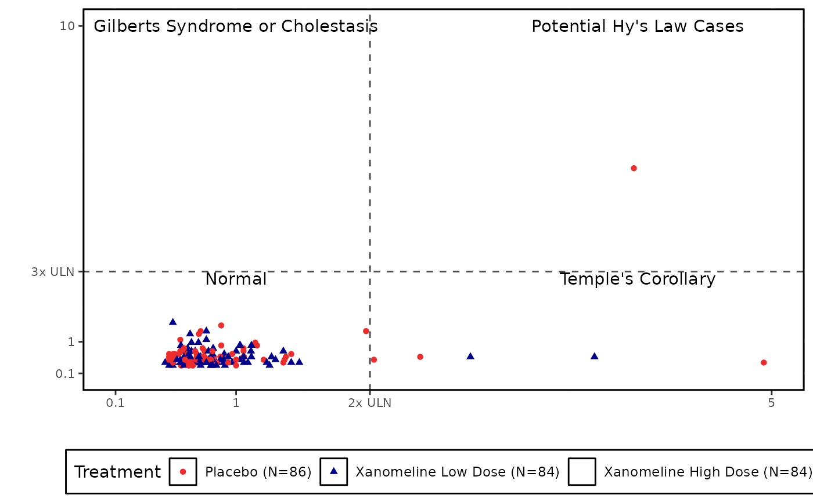

eDISH Plot
Usage
edish_plot(
datain,
axis_opts = plot_axis_opts(xlinearopts = list(breaks = c(0.1, 1, 2, 10), limits =
c(0.1, 10), labels = c("0.1", "1", "2x ULN", "10")), ylinearopts = list(breaks =
c(0.1, 1, 3, 10), limits = c(0.1, 10), labels = c("0.1", "1", "3x ULN", "10"))),
xrefline = c("2", "gray30", "dashed"),
yrefline = c("3", "gray30", "dashed"),
quad_labels = c("Potential Hy's Law Cases", "Temple's Corollary",
"Gilberts Syndrome or Cholestasis", "Normal"),
series_opts = series_opts,
plot_title = "",
griddisplay = "N",
legend_opts = list(label = "Treatment", pos = "bottom", dir = "horizontal"),
interactive = "N"
)Arguments
- datain
Input dataset for the plot retreived from
process_edish_data()- axis_opts
A
listof axis specific options retrieved fromplot_axis_opts().- xrefline
Xaxisreference line format.- yrefline
Yaxisreference line format.- quad_labels
Labels for each quadrant in the plot, as a vector or a single tilde-separated string.
- series_opts
Series Variable styling options, a
listcontainingshape,colorandsize.- plot_title
Text to use as plot title, if required
- griddisplay
Display Grid
(Y/N).- legend_opts
Legend styling option, a
listcontaininglabel,pos(position) anddir(direction).- interactive
Interactive plot (
'Y'/'N').
Details
axis_opts- The breaks and limits should not beNULL/empty.quad_labels- The label for the each quadrant should be populated in the following order: "upper right~lower right~upper left~lower left" or as a vector of length 4
Examples
data("adlb")
data("adsl")
merged_data <- adsl_merge(
adsl = adsl,
dataset_add = adlb
) |>
mentry(
subset = "SAFFL == 'Y'",
trtvar = "TRT01A",
trtsort = "TRT01AN"
)
pt_data <- process_edish_data(
datain = merged_data,
xvar = "both",
alt_paramcd = "ALT",
ast_paramcd = "AST",
bili_paramcd = "BILI"
)
series_opts <- plot_aes_opts(pt_data,
series_color = NA,
series_shape = "circlefilled~trianglefilled",
series_size = c(1.5, 1.5)
)
edish_plot(
datain = pt_data,
axis_opts = plot_axis_opts(
xlinearopts = list(
breaks = c(0.1, 1, 2, 5),
limits = c(0.1, 5),
labels = c("0.1", "1", "2x ULN", "5")
),
ylinearopts = list(
breaks = c(0.1, 1, 3, 10),
limits = c(0.1, 10),
labels = c("0.1", "1", "3x ULN", "10")
)
),
xrefline = c("2", "gray30", "dashed"),
yrefline = c("3", "gray30", "dashed"),
quad_labels =
"Potential Hy's Law Cases~Temple's Corollary~Gilberts Syndrome or Cholestasis~Normal",
legend_opts = list(
label = "Treatment",
pos = "bottom", dir = "horizontal"
),
series_opts = series_opts,
plot_title = NULL,
interactive = "N"
)
